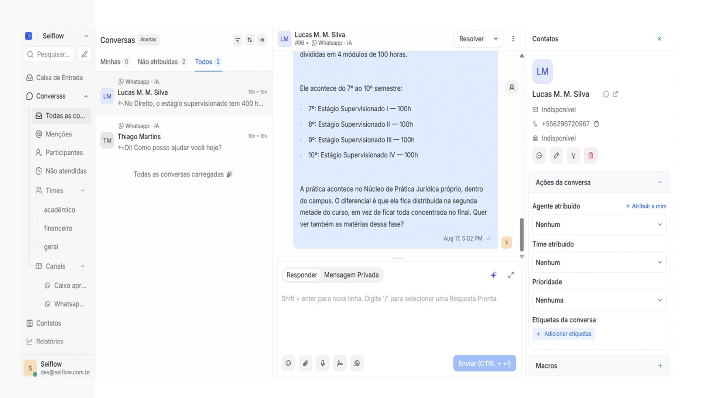
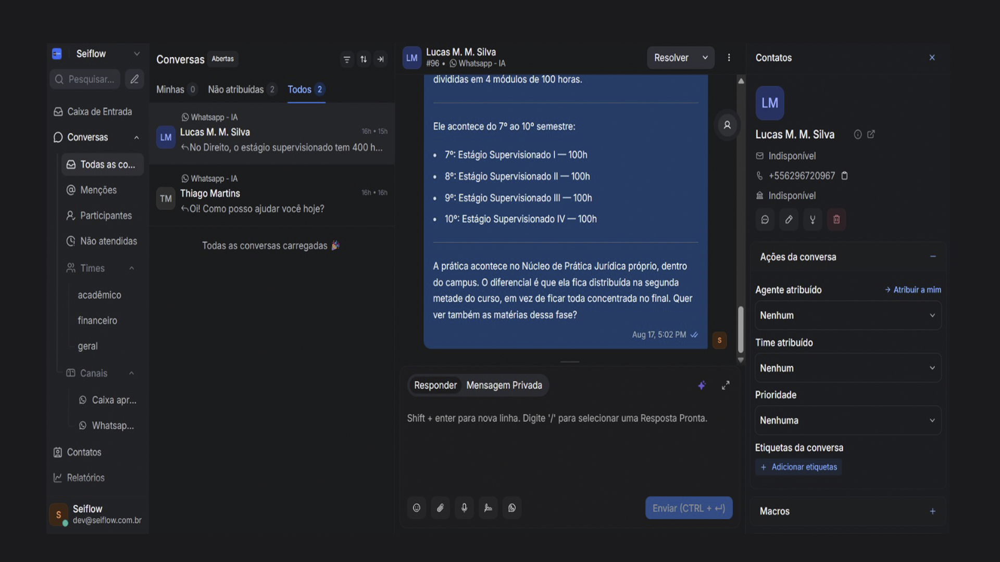
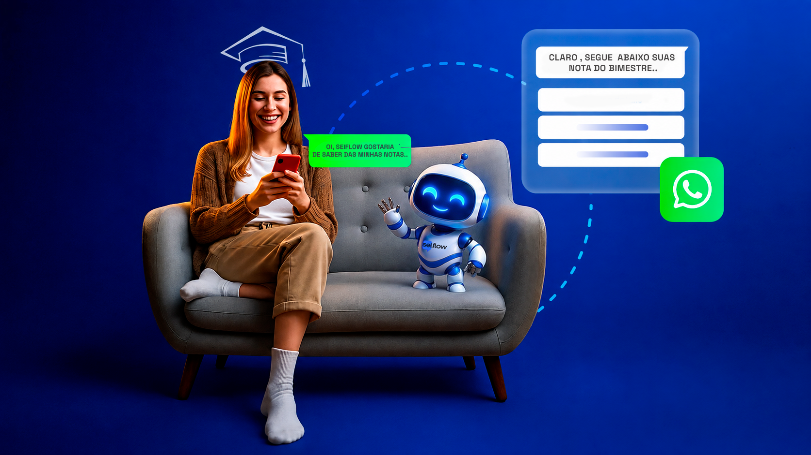
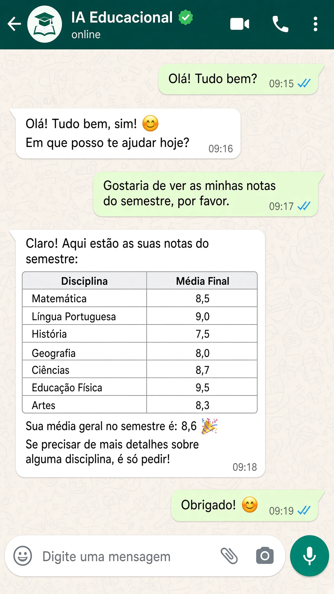
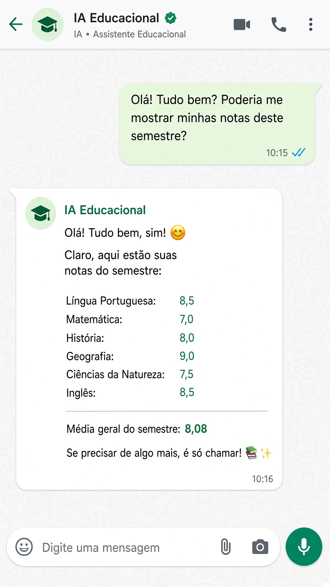

Educação básica
Secretaria, responsável, matrícula, calendário e mensalidade — o WhatsApp da escola deixa de ser plantão improvisado.
Vai muito além do chatbot tradicional. A Seiflow entende a solicitação, consulta a base da instituição e conecta-se ao seu ERP para executar o processo de verdade.


Atendimento inteligente 24 horas por dia, 7 dias por semana. Uma IA conectada à sua instituição, que atende e executa com segurança os processos do dia a dia.

Especializada em educação — não uma IA genérica
Secretaria, responsável, matrícula, calendário e mensalidade — o WhatsApp da escola deixa de ser plantão improvisado.
Notas, boletim, processo seletivo e estágio — com a base acadêmica da casa.
Cada unidade isolada, com a mesma operação. A direção vê volume, fila e custo — sem misturar dados.
Conversas de aluno e responsável, o que a IA já respondeu e quando assumir — com contexto, sem o celular da equipe.
Notas, 2ª via de boleto, status de matrícula — direto no ERP, no tom da instituição, em segundos.

A IA resolve o repetitivo e antecipa o financeiro. A equipe fica com o sensível — matrícula, exceção, empatia — com o contexto completo.
“O aluno pergunta no WhatsApp. A secretaria responde quando dá. A experiência da instituição começa a falhar em silêncio.”
Não é menu de chatbot. A IA interpreta a solicitação, consulta a base da instituição e executa no ERP — ou transfere para a equipe certa, com o histórico.
Agendar diagnósticoInterpreta o que aluno, responsável ou candidato quer — notas, boleto, matrícula, curso — em linguagem natural.
Busca em documentos oficiais da casa e acessa o ERP quando o caso exige. Nada inventado.
Fecha sozinha o que dá — inclusive gerando 2ª via ou orientando matrícula. O que pede empatia sobe para a equipe com o histórico.
Agentes da instituição
Cada agente cobre uma função da instituição — treinado na casa e conectado ao ERP.
Curso, calendário, matrícula, notas, boletim e procedimentos pedagógicos.
“Quando sai o boletim?”
Boletos, PIX, renegociação e status de pagamento — avisando o vencimento antes de perguntarem.
“Cadê o boleto deste mês?”
Regulamentos, políticas, horários da secretaria, estrutura e informações gerais.
“Qual o horário da secretaria?”
Do primeiro contato à matrícula: cursos, valores, processo seletivo e qualificação do lead.
“Quanto custa o curso de Administração?”

Prova no WhatsApp da instituição
Resposta no tom da casa, na hora, sem copiar e colar. O que exige gente sobe com o histórico — a direção acompanha tudo no painel.
Investimento
Por unidade de ensino. 6 fluxos estratégicos de atendimento, créditos, agentes especializados e repositório de conhecimento. Mensalidade só entra após os bônus ou em 30 dias.
2 números WhatsApp da instituição
Até 500 alunosInclui:
2 números WhatsApp da instituição
Até 1.000 alunosInclui:
3 números WhatsApp · redes de ensino
Até 3.000 alunosInclui:
A cobrança da mensalidade ocorre após o consumo dos créditos bônus ou em 30 dias. Setup inicial a partir de R$ 5.250, conforme volume e complexidade. O piloto começa em uma unidade, uma fila da secretaria, uma meta.
Perguntas frequentes
A pergunta não é quanto custa o Seiflow. É quanto custa a fila da secretaria continuar do jeito antigo.
Sim. Educação básica, faculdades e redes. O piloto começa em uma unidade, uma fila — secretaria, financeiro ou captação — e uma meta de primeira resposta.
O risco real é a fila da secretaria sem padrão. A IA opera só na base oficial da casa, com handoff humano e log completo — reduz erro de cansaço da equipe.
Ter WhatsApp ou um chatbot de menu é diferente de ter uma IA educacional conectada à gestão da instituição. A Seiflow entende linguagem natural e executa no ERP.
Não. Integrada ao ERP, ela também executa: emite 2ª via, orienta matrícula e avisa vencimentos antes de perguntarem.
Compare o custo de construir internamente com um piloto em 30 dias na secretaria: WhatsApp oficial, agentes da escola e fatura pronta.
A instituição já paga com a jornada da secretaria. No Seiflow o custo é visível, por crédito, e só sobe com uso efetivo. Start a partir de R$ 999/mês por unidade.
Isolamento por unidade, papéis de acesso e rastro de uso. TI entra no desenho de permissões no primeiro dia do piloto.